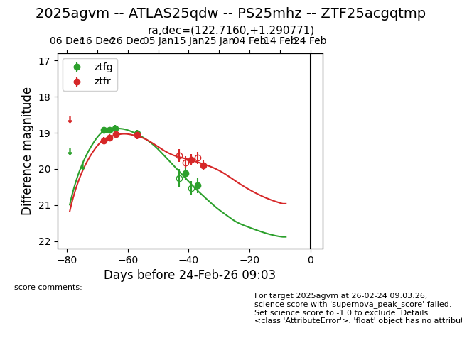
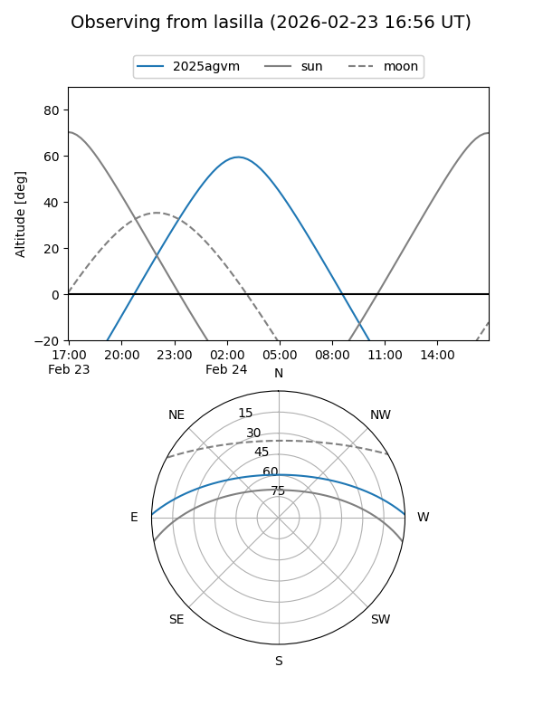
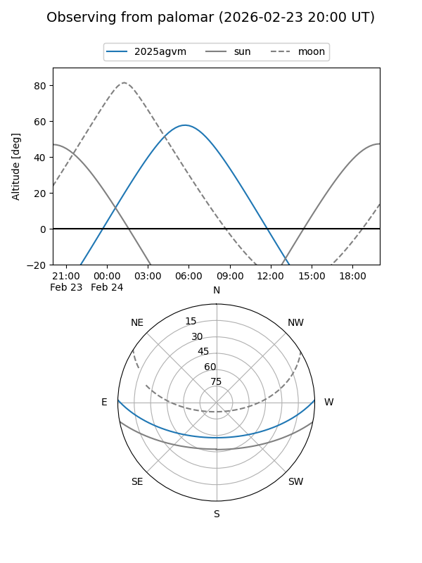
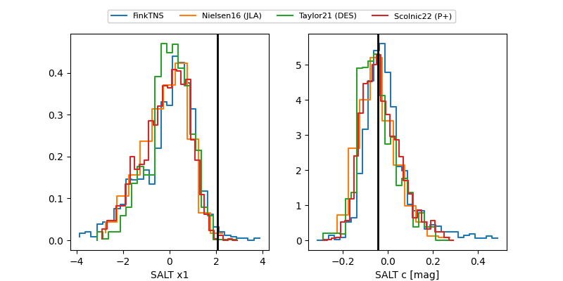

2025agvm
Target 2025agvm at 2025-12-22 17:01
Aliases and brokers:
FINK: fink-portal.org/ZTF25acgqtmp
Lasair: lasair-ztf.lsst.ac.uk/objects/ZTF25acgqtmp
ALeRCE: alerce.online/object/ZTF25acgqtmp
TNS: wis-tns.org/object/2025agvm
YSE: ziggy.ucolick.org/yse/transient_detail/2025agvm
alt names
ZTF25acgqtmp (ztf,fink_ztf)
2025agvm (tns,yse)
Coordinates:
equatorial (ra, dec) = 122.7160,+1.29077
equatorial (HMS+DMS) = 08:10:51.84,+01:17:26.78
galactic (l, b) = (221.0898,+18.20958)
Flags:
Photometry:
last atlasc=19.05, atlaso=19.52, ztfg=18.88, ztfr=19.13
1 atlasc, 1 atlaso, 3 ztfg, 2 ztfr detections
Lightcurve

Visibility


Additional plots
